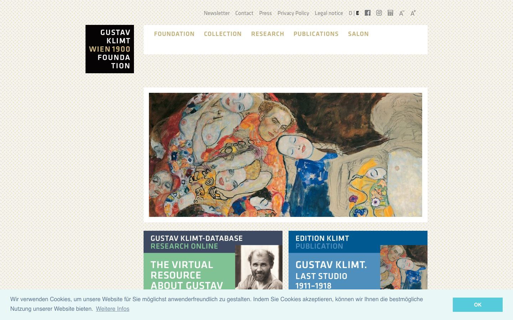

References / Website / 203
Gustav Klimt
Wien 1900 Foundation website
The foundation’s site opens with a black square logo of justified capitals and gold, on a finely patterned ground with square-cornered white panels.
- Source
- klimt-foundation.com
- Creator
- Gustav Klimt | Wien 1900-Privatstiftung
- Style
- Vienna Secession (agent-proposed, not yet reviewed by a person)
- Moods
- Geometric, refined, scholarly
- Evidence
- Captured with
tools/capture.mjs(headless Chrome, 1440 × 900) on 28 September 2026 and inspected. A cookie bar covers the bottom 90 px of the screenshot. The measurement covers up to four screens. - Reviewed
- Rights
- Third-party work, stored with credit for commentary. License: unverified. Rights policy
Observed
- At the upper left, a black square holds “GUSTAV / KLIMT / WIEN 1900 / FOUNDA / TION” in white and gold capitals, right-aligned; “FOUNDATION” is broken over two lines to keep the block square.
- The page ground is a fine cream and gray pattern of small interlocking marks, like a woven or diagonal lattice.
- The navigation (FOUNDATION, COLLECTION, RESEARCH, PUBLICATIONS, SALON) is in spaced gold capitals on a white panel with square corners.
- A Klimt painting fills a white-framed panel in the right column.
- Below, two square-cornered tiles in slate blue, green, and blue carry large white capitals: “GUSTAV KLIMT-DATABASE / RESEARCH ONLINE” and “EDITION KLIMT / PUBLICATION”.
- The layout is a left logo column and a wide right column, not a central axis.
Why it belongs
The logo is the closest the site comes to the style: a square block of capitals that are broken and aligned to fill the shape, with the words “WIEN 1900” in gold.
The fingerprint does not see the patterned ground: it is a CSS background image, and the extractor measured surface.patternShare and color.patternShare as 0. Text is left-aligned (type.centerShare 0.01) and only 17% of it is capitals. Square corners (radius 0) and one hue pass.
Borrow
Make a logo as a black square of capitals set to fill each line, and break a long word to keep the block square.
Put square-cornered white panels on a finely patterned ground so the pattern frames the content.
Measured
Machine-extracted by tools/extract-traits.js on . Full measurement.
- Type families
- Helvetica (65%), Klavika Regular (18%), Klavika Medium (17%)
- Type scale ratio
- 1.13
- Median radius
- 0 px
- Mean chroma
- 0.11
- Palette
- #5c7291 35%
- #eaf7f7 27%
- #ffffff 19%
- #828282 10%
- #c2ac72 9%
- #000000 0%

